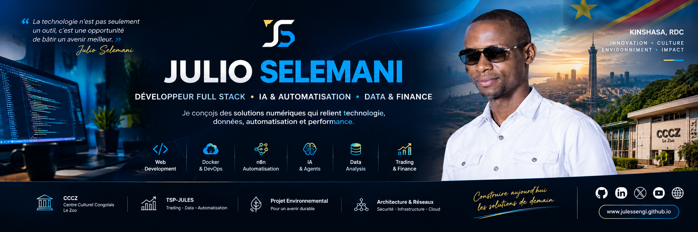

💻 Development
Conception de plateformes web, interfaces, APIs et architectures applicatives.

Je suis Julio Selemani Sengi, développeur Full Stack, passionné par l'intelligence artificielle, l'automatisation, l'analyse des données et la finance.
Mon parcours combine informatique et finance avec un intérêt particulier pour la création de solutions numériques concrètes. Je développe des applications web, des systèmes d'automatisation et des outils d'analyse destinés à résoudre des problèmes réels.
Je m'intéresse également à la transformation numérique, aux projets culturels et environnementaux et aux technologies appliquées à la finance.
Conception de plateformes web, interfaces, APIs et architectures applicatives.
Exploration de l'IA et de l'automatisation pour connecter les outils et réduire les tâches répétitives.
Analyse de données, indicateurs économiques, statistiques, finance et recherche autour du trading.
Environnements de développement, déploiement, conteneurisation et automatisation des livraisons.
Développement et évolution d'une présence numérique destinée à soutenir la communication, la gestion de contenu et la visibilité du Centre Culturel Congolais « Le Zoo ».
Projet personnel de recherche et développement autour de l'analyse des marchés, de la gestion du risque, du journal de trading, des statistiques et de l'automatisation.
Conception d'une plateforme numérique destinée à présenter, documenter et structurer un projet environnemental auprès de partenaires.
Expérimentations autour de Docker, Linux/WSL, réseaux, CI/CD, monitoring et automatisation des environnements.
Créer des applications utiles, maintenables et adaptées aux contraintes réelles.
Connecter les systèmes et automatiser les processus répétitifs.
Explorer les agents, les APIs et l'intégration de l'intelligence artificielle dans les workflows.
Approfondir l'analyse des données et les outils d'aide à la compréhension des marchés.
Mon objectif est de progresser à la croisée de ces domaines pour transformer les idées et les données en solutions numériques utiles.